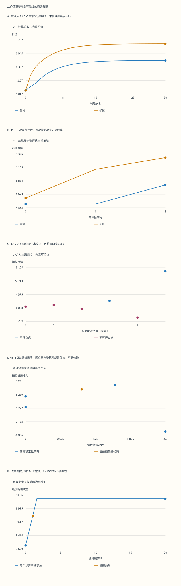

本页目录
MDP II · 价值迭代、策略迭代与占用量 LP
前置：Bellman 方程与误差证书、线性方程、有限维线性规划。学完本页，应能分别运行 VI、PI、原始与对偶 LP，解释它们为什么汇合；加入资源约束后，应能恢复并验证随机策略。
学习层：算法交出的答案，还需要什么证据？
1. 延续同一座营地：现在限制远行次数
沿用上一页的两个状态。每一步先在当前状态选动作、收到期望奖励，再按表中概率转移。所有奖励和转移已知，本页没有从样本学习模型。
| 当前状态 | 动作 | 奖励 | 下一步营地概率 | 下一步矿区概率 |
|---|---|---|---|---|
| 营地 | 采集 | 1 | 1 | 0 |
| 营地 | 远行 | −2 | 0 | 1 |
| 矿区 | 收获 | 4 | 0.4 | 0.6 |
| 矿区 | 返回 | 2 | 1 | 0 |
上一页问“长期看哪个动作好”。这一页再问：每次出发消耗一份资源，如果远行的期望折现次数不能超过 1，如何安排？这个预算累计的是动作发生次数的折现和，不是“整个旅程最多出发一次”的逐条路径硬限制。后者需要不同的状态与约束建模。
先把无预算问题算清：VI 反复更新价值；PI 完整评价当前策略后改进；LP 同时处理四条动作不等式。再通过 LP 的对偶变量，把价值转成可核对的访问流量。默认折现 \(\gamma=4/5\)，初始分布 \(\mu=(1/2,1/2)\)，预算 \(B=1\)。
2. 先预测，再打开三种算法的记录
实验的八个控制项分工不同：折现影响问题本身；两状态初值与轮数影响 VI 路径；两个初始动作影响 PI 路径；初始分布影响 LP 的加权目标；预算只限制远行动作的折现占用量。
先回答四道预测：动作精确并列时是否必须切换？LP 目标中有零权重时是否仍唯一选出整个 \(V^*\)？折现占用量是否总和为 1？加入预算后确定性策略是否仍总够用？每道题的条件写在题干，调旋钮不会改写条件。未完成预测时，数值、曲线与下载保持隐藏。
数值旋钮支持 \(0\le\gamma\le0.999\)，以及专门的 \(\gamma=1\) 边界。定理的折现范围是所有 \(0\le\gamma<1\)；界面上限用于限制二进制浮点线性求解的条件数。\(\gamma=1\) 只保留有限轮 VI，不显示不适用的折现评估、LP 或占用量。
无脚本对照：图和下表读取同一份六组固定记录；完整VI每轮、PI每次评估、六个LP交点和预算证书均在下载中。

| 预设 | γ | VI轮数 | PI评估次数 | 无约束目标 | 预算最优收益 | 实际远行占用 |
|---|---|---|---|---|---|---|
| budget | 0.8 | 30 | 3 | 10.4545455 | 9.5 | 1 |
| patient | 0.999 | 200 | 3 | 2284.79566 | 1008.22566 | 1 |
| tie | 0.625 | 30 | 1 | 5.06666667 | 5.06666667 | 0 |
| camp | 0.2 | 30 | 2 | 1.25 | 1.25 | 0 |
| boundary | 1 | 30 | 不适用 | 不适用 | 不适用 | 不适用 |
| forbidden | 0.8 | 30 | 3 | 10.4545455 | 7.88461538 | 0 |
下载六组完整记录。所有占用量未归一化；γ=1的无限时域量不适用。普通浮点差距和可行性容差保留在完整数据中，不是向外舍入认证。
3. VI：一轮究竟计算了什么
给定 \(V_k\)，先算四个候选 \(Q_k(s,a)=r(s,a)+\gamma\sum_{s'}P(s'|s,a)V_k(s')\)，再对每个状态取最大值，得到 \(V_{k+1}\)。这些是精确期望更新；“精确”指使用完整已知模型，不表示计算机没有舍入误差。
从零初值、\(\gamma=4/5\) 出发，\(V_0=(0,0)\)，\(V_1=(1,4)\)，\(V_2=(9/5,156/25)\)。若要求做一轮更新，答案就是 \(V_1\)；显示第 \(0,1\) 两行以后再更新一次，会把未展示的 \(V_2\) 错当末值。实验保存完整 \(k=0,\ldots,K\)，末值直接取最后一行，不按步长省略中间轮。
上一页的压缩论证给出 \(\|V_k-V^*\|_\infty\le\gamma^k\|V_0-V^*\|_\infty\)。更可操作的是根据当前行重新计算 \(TV_k\)，得到残差 \(r_k=\|TV_k-V_k\|_\infty\)，再用 \(r_k/(1-\gamma)\) 控制价值误差。表中同时列四个 \(Q\)、\(TV_k\) 与这个界，不能只看曲线平不平。
若每个状态有至多 \(m\) 个动作、共 \(n\) 个状态，稠密转移下一轮直接计算约需 \(O(mn^2)\) 算术操作；稀疏转移应按非零项计数。迭代轮数还取决于折现、初始误差和容差。这里的两条曲线不能证明大规模问题的统一运行时间。
4. 策略评估：解线性方程为什么可靠
固定一个确定性平稳策略 \(\pi\)，把其所选动作的奖励与转移分别记为 \(r^\pi,P^\pi\)。按下一步条件期望拆开回报，有 \(V^\pi=r^\pi+\gamma P^\pi V^\pi\)。于是
为什么逆矩阵存在？随机矩阵的 sup 范数为 1，故级数尾部被几何级数控制；有限部分乘上 \(I-\gamma P^\pi\) 后只剩单位阵减一个趋零尾项。这同时说明逆矩阵逐项非负，而且其每一行之和为 \(1/(1-\gamma)\)。非负性马上会用于证明改进，而不是只用于算数。
默认先取“营地采集、矿区返回”，策略编码为 \((0,1)\)。方程是 \(V_c=1+(4/5)V_c\)、\(V_m=2+(4/5)V_c\)，因此 \(V^\pi=(5,6)\)。完整评估是解到该策略的无限时域价值；它和只对 \(V\) 做一次 Bellman 更新不是同一步。
5. PI：严格改进、并列保留与有限终止
用 \(V^\pi\) 评价所有动作，选择一个贪心策略 \(\pi'\)。若当前动作已经达到最大值，就保留当前动作。令 \(a=T_{\pi'}V^\pi-V^\pi\ge0\)，减去两条策略方程可得
这不是“贪心看起来更好”的直觉跳跃：右边的逆矩阵非负，所以当前改进经未来访问传播后仍不会变坏。若至少一个状态的 \(a\) 严格为正，逆矩阵级数中的单位阵项保证该状态价值严格增加。
有限个确定性策略只有 \(\prod_s|\mathcal A(s)|\) 种。每次非终止迭代都有严格价值改进，就不能回到以前的策略；保留已最优的当前动作避免只在并列动作间来回切换。因此精确 PI 有限终止。终止时 \(T V^\pi=T_\pi V^\pi=V^\pi\)，由折现不动点唯一性得到 \(V^\pi=V^*\)。
默认模型从 \((0,1)\) 开始，依次评估 \((0,1)\)、\((0,0)\)、\((1,0)\)，价值依次为 \((5,6)\)、\((5,140/13)\)、\((90/11,140/11)\)，最后稳定。实验保留每轮矩阵、行列式、四个 \(Q\)、优势及新旧动作。
数学中的“精确并列”和数值近似不能混用。界面只有当替代动作高出当前值超过 \(64\epsilon_{\rm machine}\max(1,\max|Q|)\) 时才切换，并记录此容差；这是浮点实现的停止约定，不是把该容差写进精确有限终止定理。
6. 评估只做几步：哪些结论必须重新检查
大规模 PI 可以截断策略评估或用迭代线性求解。若近似评估为 \(\widehat V\)，策略方程残差为 \(\delta=\|T_\pi\widehat V-\widehat V\|_\infty\)，同样由非负逆矩阵行和得到 \(\|\widehat V-V^\pi\|_\infty\le\delta/(1-\gamma)\)。设右边为 \(e\)，任一动作的 \(Q\) 误差不超过 \(\gamma e\)。
因此，只有当某动作在近似 \(Q\) 中比当前动作高出超过 \(2\gamma e\)，才能单凭这个误差界保证其对真实 \(V^\pi\) 也严格更好。小于此门槛不说明一定没有改进，只说明证据不足；可以继续评估或采用另有证明的近似策略迭代方案。本实验使用完整两元线性求解，不把截断评估的结果假装成精确 PI。
当 \(\gamma\) 接近 1，\(1/(1-\gamma)\) 会放大评估误差；小的方程残差也需要结合条件数解释。图上几轮结束只是当前模型的记录，不能作为一般 PI 复杂度定理。
7. 价值 LP：为什么所有动作都必须受约束
把每个状态动作的一行写成 \(A_{(s,a),s'}=\mathbf1_{s=s'}-\gamma P(s'|s,a)\)，则四条约束是 \(AV\ge r\)。奖励最大化问题对应的价值 LP 却是最小化：
因为 \(AV\ge r\) 等价于 \(V\ge TV\)，由单调性反复应用 \(T\) 得到 \(V\ge T^kV\to V^*\)。所以所有可行 \(V\) 都在 \(V^*\) 的逐坐标上方，而 \(V^*\) 自身可行。若每个 \(\mu_s>0\)，任何非零的非负余量都会严格增大目标，故唯一最优解是 \(V^*\)。
默认 \(\gamma=4/5\) 的四条左端依次为 \((1/5)V_c\)、\(V_c-(4/5)V_m\)、\(-(8/25)V_c+(13/25)V_m\)、\(-(4/5)V_c+V_m\)，右端依次为 \(1,-2,4,2\)。本实验独立求四条边界的全部六对交点；平行配对记为不适用，其余逐一检查全部四个 slack，最后在可行交点中最小化目标。它没有先拿 PI 的答案冒充 LP 求解。
在 \(V^*=(90/11,140/11)\)，四个 slack 为 \((7/11,0,0,46/11)\)。远行与收获约束紧，另外两项严格为正。选两个约束解出交点不等于证明可行；遗漏的另外两项可能排除它。
若 \(\mu\) 有零分量，最优目标仍等于 \(\mu^\mathsf TV^*\)，但不一定唯一恢复所有状态的 \(V^*\)。例如 \(\gamma=1/5,\mu=(1,0)\) 时，所有 \(V_c=5/4\)、\(205/44\le V_m\le65/4\) 都最优。营地一直采集时不访问矿区，目标看不见这段矿区余量。可达关系可能进一步约束零权状态，所以也不能反过来断言“有零权就一定不唯一”。
8. 对偶：价值不等式变成访问流守恒
令 \(x(s,a)\) 表示从初始分布 \(\mu\) 出发，动作 \((s,a)\) 的未归一化折现占用量：\(x(s,a)=\mathbb E_\mu\sum_{t\ge0}\gamma^t\mathbf1_{\{S_t=s,A_t=a\}}\)。它可以大于 1。令 \(z(s)=\sum_a x(s,a)\)，把 \(t=0\) 与后续访问分开，得到
矩阵形式就是 \(A^\mathsf Tx=\mu\)。对状态求和，转移概率归一性给出 \((1-\gamma)\sum_{s,a}x(s,a)=1\)。所以总质量为 \(1/(1-\gamma)\)；如果另定义归一化占用量 \(y=(1-\gamma)x\)，流方程右侧必须同时改为 \((1-\gamma)\mu\)。
累计奖励可按状态动作重排为 \(r^\mathsf Tx\)。因此价值 LP 的对偶是 \(\max_{x\ge0}r^\mathsf Tx\)，约束 \(A^\mathsf Tx=\mu\)。更直接地，任一原始可行 \(V\) 与对偶可行 \(x\) 满足 \(\mu^\mathsf TV-r^\mathsf Tx=x^\mathsf T(AV-r)\ge0\)。这同时给出弱对偶和可数值核查的差距分解。
默认最优占用量按“采集、远行、收获、返回”排序为 \((0,35/22,75/22,0)\)，总和为 5，奖励为 \(115/11=\mu^\mathsf TV^*\)。其正分量恰落在零 slack 动作上，所以差距为零。不能只检查两个目标接近：还须分别核对流平衡、非负性与所有 Bellman 不等式。
9. 从一张可行流表恢复策略
对任意可行 \(x\)，若 \(z(s)>0\)，定义 \(\pi(a|s)=x(s,a)/z(s)\)；若 \(z(s)=0\)，该状态动作可任选。把它代回流方程就得到 \(z=\mu+\gamma(P^\pi)^\mathsf Tz\)。由于折现系统有唯一解，这个恢复策略的真实折现访问量正是原来的 \(z\)，其动作占用量正是 \(x\)，收益也保持为 \(r^\mathsf Tx\)。
这里恢复的是“每次在某状态按固定概率选动作”的平稳随机策略。先随机抽一种确定性策略并整段执行，可以产生占用量的凸组合，但这是另一种行为描述；从该组合按状态归一化恢复后，才得到相同流量与收益的平稳随机策略。不要直接把整段混合系数当作每个状态的动作概率。
零访问状态没有除以零：当 \(\mu(s)=0\) 且没有折现流入，该状态的动作选择不影响当前初始分布下的收益。实验明确记录其任选约定，仍复算全部流方程。
10. 加预算：为什么随机化可能严格更好
令 \(D^\mathsf Tx=x(\text{营地},\text{远行})\)。约束问题是最大化 \(r^\mathsf Tx\)，同时满足 \(A^\mathsf Tx=\mu\)、\(x\ge0\)、\(D^\mathsf Tx\le B\)。它仍是有限维 LP，但加的一刀可能把原有边切出一个新顶点；因此无约束问题的“存在确定性平稳最优策略”不能原封不动迁移。
本模型无约束占用量多面体由四种确定性策略占用点的凸包给出。实验保留四个点，再枚举它们两两连线与预算平面的交点。实际边都包含在这些线段中；多枚举的内部点仍可行，不会虚增最优值。最后选收益最大的可行候选，并独立检查恢复策略。这是两状态演示用的完整枚举方法，不是一般大规模约束 MDP 的推荐求解器。
默认 \(B=1\) 的最优流为 \(x=(3/2,1,5/2,0)\)。营地总访问量为 \(5/2\)，所以每次在营地远行概率是 \(1/(5/2)=2/5\)，采集概率为 \(3/5\)；矿区总是收获。其收益为 \(3/2-2+4(5/2)=19/2\)，远行占用恰好为 1。
满足这一预算的确定性策略中，最优收益只有 \(205/26\)；\(19/2>205/26\)，所以随机化在这个明确例子里严格有益。它限制的是期望折现资源，不保证每一条随机轨迹都满足某个硬次数上限。
11. 影子价格：再给预算答案一张上界证书
为远行附加非负价格 \(\eta\)，把奖励改为 \(r-\eta D\)。解这个无约束惩罚 MDP 得到 \(V_\eta\)。任何预算可行策略都满足原收益不超过 \(\mu^\mathsf TV_\eta+\eta B\)；因此可最小化这个上界：
对任意两侧可行对象，差距分解为 \(x^\mathsf T(AV+\eta D-r)+\eta(B-D^\mathsf Tx)\)。两项都非负；若相加为零，既证明最优，也说明正访问动作对应零 slack，正价格对应紧预算。注意 \(\eta\) 是非负标量，\(V\) 的两个分量不受非负限制。
默认例子可取 \(\eta=21/13\)、\(V_\eta=(5,140/13)\)。上界为 \(205/26+21/13=19/2\)，恰等于已恢复策略的收益。四个惩罚 slack 为 \((0,0,0,62/13)\)，预算也紧，所以互补乘积全部为零。
随预算变化，默认模型的最优收益为 \(J(B)=205/26+(21/13)B\)，直到 \(B=35/22\)；以后保持 \(115/11\)。前一段每增加一份折现远行资源，收益增加 \(21/13\)；后一段预算已不再限制最优策略，价格可取零。折点处可能有多个最优价格。实验记录所有候选支持线及完整预算扫描，并把范围内的确定性策略远行占用值加入扫描，保留收益曲线可能的折点；普通双精度下的微小差距仍是数值读数，不冒充向外舍入的严格区间证书。
12. 八道复算题：从更新到约束证书
1. VI 只做一轮更新，最终价值是什么？
取 \(\gamma=4/5,V_0=(0,0)\)。四个候选为 \((1,-2,4,2)\)，逐状态取最大得到 \(V_1=(1,4)\)。完整记录只有第 0 行和第 1 行，末值必须是 \((1,4)\)。再应用一次算子才得到 \(V_2=(9/5,156/25)\)；把它作为“一轮”的末值会多做一步。
2. 默认 PI 从“采集、返回”出发，第一轮为什么只改矿区？
评估得到 \((5,6)\)。营地候选为 \((5,14/5)\)，保留采集；矿区候选为 \((212/25,6)\)，切换收获。新策略 \((0,0)\) 的评估方程给出 \((5,140/13)\)，此时营地远行候选 \(-2+(4/5)(140/13)=86/13>5\)，所以再改为 \((1,0)\)。评估为 \((90/11,140/11)\) 后两状态均稳定。三次评估中只有两次策略改变。
3. 两个动作精确并列时，有限终止论证哪里会出问题？
在 \(\gamma=5/8\)，最优值为 \((8/3,112/15)\)。营地采集的 \(Q\) 为 \(1+(5/8)(8/3)=8/3\)，远行为 \(-2+(5/8)(112/15)=8/3\)。若每次遇到并列都切换，可在两个同价值策略间反复转移，失去“每次改变必有严格价值改进”的论据。保留当前已最优动作即可停止；两种营地动作都可以最优，不应为了唯一标签而制造切换。
4. 证明零权 LP 例子的整个最优线段。
取 \(\gamma=1/5,\mu=(1,0)\)。采集约束强迫 \(V_c\ge5/4\)，所以目标最低为 \(5/4\)。固定该值，远行约束给出 \(V_m\le65/4\)，收获约束给出 \(V_m\ge205/44\)，返回约束仅要求 \(V_m\ge9/4\)，较弱。因此上述闭区间全部可行且最优；只有下端是整个 \(V^*\)。这是同一目标值与逐状态最优值不同的具体例子。
5. 用流方程验证无约束最优占用量。
默认 \(x=(0,35/22,75/22,0)\)。营地流残差左端为 \(35/22-(4/5)(2/5)(75/22)=1/2\)；矿区左端为 \(75/22-(4/5)[35/22+(3/5)(75/22)]=1/2\)。总质量 \((35+75)/22=5\)，符合 \(1/(1-\gamma)\)。收益 \(-2(35/22)+4(75/22)=115/11\)，与 \((1/2)(90/11+140/11)\) 相同；配合四项 slack 非负且互补为零，得到最优证书。
6. 预算为 1 时，为什么混合概率不是直接取整段策略的系数？
最优流为 \((3/2,1,5/2,0)\)，所以营地远行概率为 \(2/5\)。若把确定性“远行、收获”的占用流与“采集、收获”的占用流整段混合，前者的远行占用为 \(35/22\)，后者为零，满足预算所需的整段混合系数为 \(22/35\)。它并不等于 \(2/5\)：两种策略下营地的访问次数不同。按混合后的状态访问量归一化，才恢复正确的逐状态随机策略。
7. 预算最优流、影子价格和互补松弛如何一起验证？
对 \(x=(3/2,1,5/2,0)\)，流平衡两行分别是 \(5/2-(4/5)[3/2+(2/5)(5/2)]=1/2\) 与 \(5/2-(4/5)[1+(3/5)(5/2)]=1/2\)。取 \(\eta=21/13,V=(5,140/13)\)，惩罚 slack 是 \((0,0,0,62/13)\)；第四项占用为零，前三项 slack 为零，预算余量也为零。故差距分解的五个乘积全部为零。原收益和对偶上界都是 \(19/2\)，不用猜哪条曲线“看起来最高”。
8. 近似策略评估的残差为 0.01，动作优势 0.1 够不够？
取 \(\gamma=0.9\)，评估误差界为 \(e=0.01/(1-0.9)=0.1\)，两个动作候选差的误差最多为 \(2\gamma e=0.18\)。看到近似优势 \(0.1\) 还不足以保证真实严格改进。若继续评估把残差降到 \(0.001\)，门槛变成 \(0.018\)，同样的 \(0.1\) 优势就足够。这里保证的是对当前策略真实价值的局部严格改进；没有额外论证，不能把它升级成任意近似 PI 的全局收敛率。
来源与进一步阅读：IIT Madras 的折现 MDP 讲义给出策略评估与改进的基本路线；Aditya Mahajan 的 MDP 线性规划讲义介绍原始/对偶及占用量视角。本页统一采用奖励最大化与未归一化占用量，并逐式推导流量和预算证书，阅读不同材料时须先核对归一化及最大/最小约定。
下一步把已知转移改成样本、把表格价值改成函数逼近时，更新误差、采样误差和分布改变会进入证明。这里得到的是有限已知模型的算法与优化基础；它为后续强化学习课程提供可复算的参照。